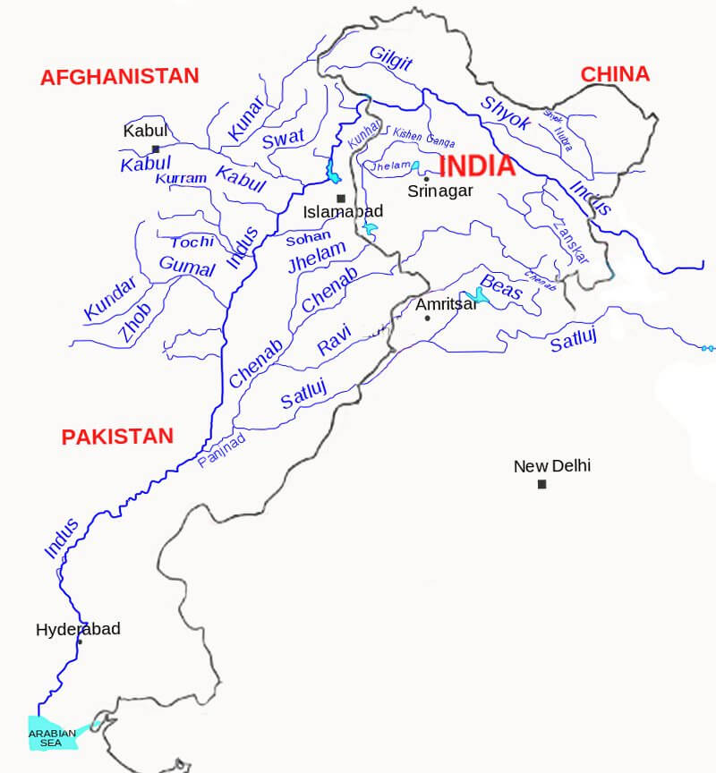
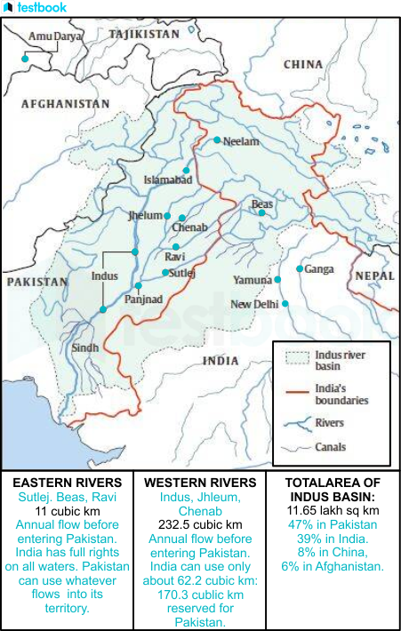
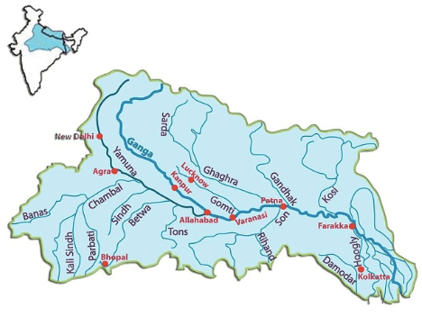
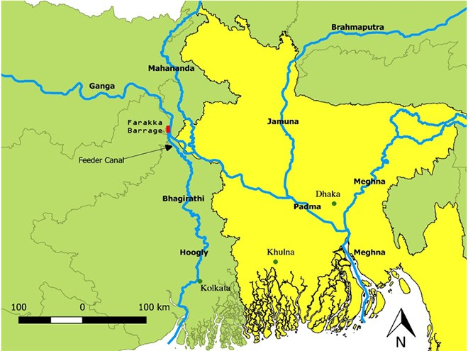
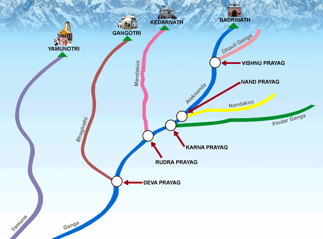
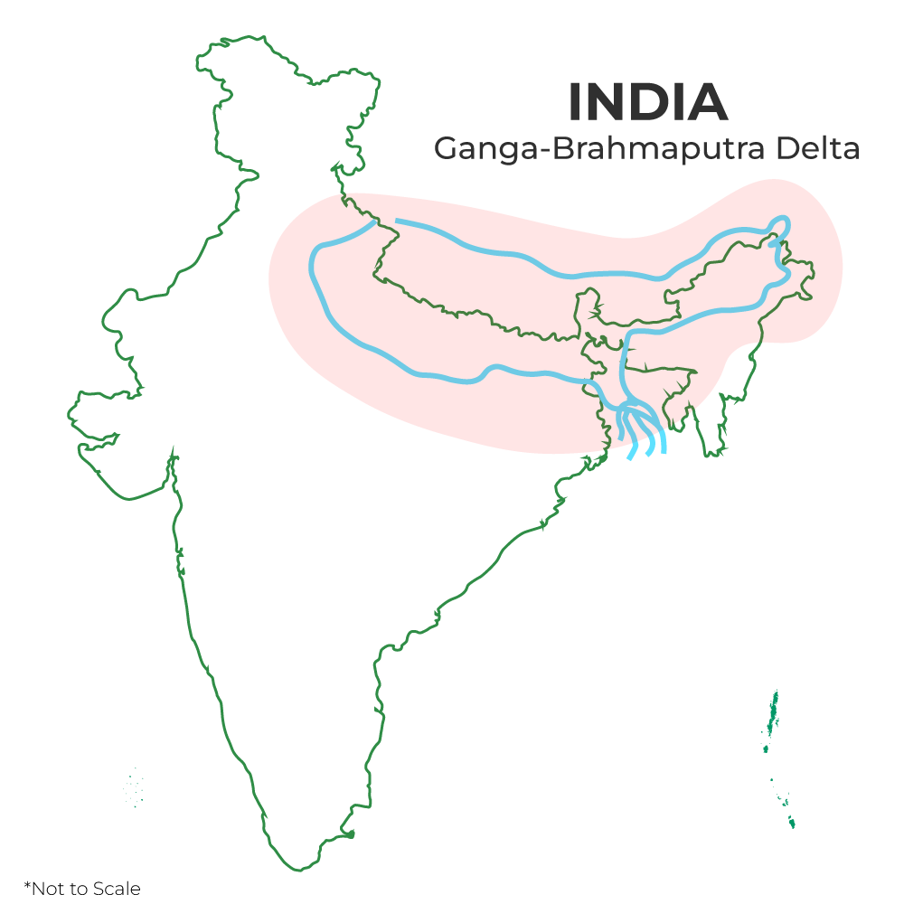
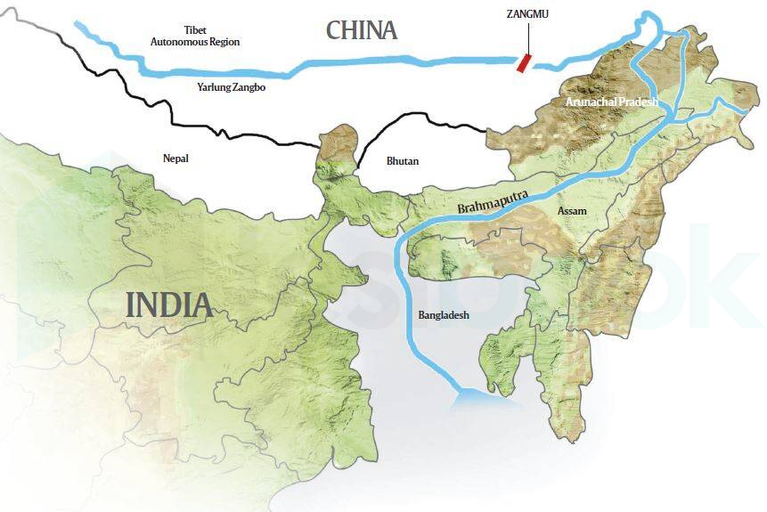
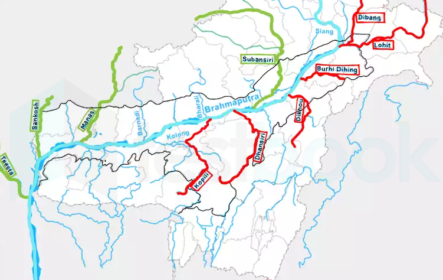

06 Drainage System Himalayan River System
Drainage System: Himalayan River System
The Himalayan Drainage System is one of the most extensive and crucial drainage networks in the world. This complex system of rivers, originating from the glaciers and snowfields of the Himalayas, has been instrumental in shaping the geography, ecology, and socio-economic fabric of the Indian subcontinent.
About the Himalayan Drainage System
The Himalayan River System primarily comprises the Indus, Ganga, and Brahmaputra river basins. These rivers are perennial, receiving water from both snowmelt and precipitation. The rivers flow through deep gorges formed by erosional processes alongside the uplift of the Himalayas. In the mountainous course, they create U-shaped valleys, V-shaped valleys, rapids, and waterfalls. As they reach the plains, these rivers form various depositional features, including flat valleys, meanders, ox-bow lakes, flood plains, braided channels, and deltas at their mouths. In the Himalayan region, the rivers follow a tortuous course, but in the plains, they show a tendency to meander and often shift their courses. The Kosi River, known as the ‘Sorrow of Bihar’, is notorious for its unstable course and susceptibility to significant erosion, which increases its sediment load, causing it to change its course frequently.
Evolution of the Himalayan Drainage System
Geologists have differing views on the evolution of the Himalayan rivers. It is believed that a major river, called Shiwalik or Indo-Brahma, once traversed the entire length of the Himalayas, from Assam to Punjab, discharging into the Gulf of Sindh during the Miocene period (approximately 5-24 million years ago). Evidence of this ancient river includes lacustrine origins and alluvial deposits. Over time, this Indo-Brahma River divided into three major drainage systems: Indus and its tributaries in the Western part. Ganga and its Himalayan tributaries in the Central part. Brahmaputra in Assam and its tributaries in the Eastern part. This division is thought to have occurred due to the Pleistocene upheaval, including the uplift of the Potwar Plateau (Delhi Ridge) in the west, which created a water divide between the Indus and Ganga systems. Similarly, the Malda gap between the Rajmahal hills and the Meghalaya plateau redirected the Ganga and Brahmaputra systems toward the Bay of Bengal.
Features of the Himalayan River System
Young Drainage Pattern: The rivers are young and exhibit a dendritic or trellis drainage pattern with numerous tributaries joining the main river. Seasonal Flow: The rivers experience significant variations in water flow throughout the year, with peak flows during the summer due to snowmelt and monsoon rains. Steep Gradients and V-Shaped Valleys: The rivers have steep gradients, originating in high-altitude regions, resulting in V-shaped valleys and rapid flow rates. Meandering Courses and Oxbow Lakes: In the plains, the rivers exhibit meandering courses, forming oxbow lakes, floodplains, and braided channels. Sediment-laden Rivers: Due to their steep gradients and erosive power, Himalayan rivers carry large amounts of sediment, which they deposit in the plains, creating fertile alluvial soils in areas like the Indo-Gangetic Plain.
Indus River System
The Indus River System, a vital part of the Himalayan drainage system, plays an essential role in sustaining ecosystems and human settlements in the Indian subcontinent. This system is crucial for the cultural, agricultural, and economic landscapes of the region.
About the Indus River System
The Indus River System is one of the three major river basins within the Himalayan drainage system. It flows through the western part of the Indian subcontinent, carving deep gorges and supporting a variety of ecosystems along its path. The Indus River, at over 3,000 kilometers, is the longest river in Pakistan and one of the longest in Asia.

Origin of the Indus River
The Indus River originates from a glacier near Bokhar Chu in the Tibetan region, in the Kailash Mountain range near Mansarovar Lake. It flows northwest, entering the Ladakh region of India at Demchok. The river runs between the Karakoram and Ladakh ranges. In Tibet, it is known as ‘Singi Khamban’, or the Lion’s Mouth.
Course of the Indus River
The Indus River is joined by the Zaskar River at Leh and later by the Shyok River. Near Mithankot, it receives water from the five eastern tributaries: Jhelum, Chenab, Ravi, Beas, and Satluj, which converge to form the Panchnad. The river continues through Sindh Province, gathering sediment to form the Indus River delta before draining into the Arabian Sea near Karachi. Note: The blind Indus River Dolphin, a sub-species of dolphin, is found exclusively in the Indus River. The Indus flows through India only in the Leh district of Ladakh.
Tributaries of the Indus River
The Indus River is fed by several left-bank and right-bank tributaries.
Left-bank Tributaries The left-bank tributaries of the Indus River include:
Zaskar River Suru River Soan River Jhelum River Chenab River Ravi River Beas River Satluj River Panjnad River Important Left-bank Tributaries:
Zanskar River: An important tributary with sparse human settlements along its course. Chenab River: Originates from Bara Lacha Pass in the Lahul-Spiti region. Formed by the confluence of the Chandra and Bhaga rivers. Known as Chandrabhaga in its upper reaches. Flows through the Jammu region and into the plains of Punjab. Jhelum River: Originates from a spring at Verinag at the foot of the Pir Panjal in the Kashmir Valley. Its largest tributary, the Kishanganga (Neelum) River, joins it before converging with the Chenab River in Pakistan. Ravi River: Originates from the Dhauladhar Range in Chamba district, Himachal Pradesh. Known for the Ranjit Sagar Dam. Sutlej River: Known as the Red River, it rises from Mansarovar Lake. Flows south through Himachal Pradesh, with significant hydroelectric and irrigation projects along its course, including the Bhakra Nangal Dam. Beas River: Originates from Rohtang Pass, merging with the Sutlej River at Hari-Ke-Pattan in Punjab.
Right-bank Tributaries The right-bank tributaries of the Indus River include:
Shyok River Gilgit River Hunza River Swat River Kunnar River Kurram River Gomal River Tochi River Kabul River Important Right-bank Tributaries:
Shyok River: Rises from the Karakoram Range and flows through Northern Ladakh, originating from the Rimo Glacier. Nubra River: A major tributary of the Shyok River, originating from the Nubra Glacier, it joins the Shyok River downstream.
Indus Water Treaty 1960
The Indus Water Treaty (1960) is a landmark agreement between India and Pakistan, brokered by the World Bank, aimed at managing the shared water resources of the Indus River system. The treaty allocated the use of the three eastern rivers — Ravi, Beas, and Sutlej —to India, while granting Pakistan control over the three western rivers — Indus, Jhelum, and Chenab. This division of rivers established clear guidelines for water-sharing between the two nations. The treaty has been regarded as one of the most successful water-sharing agreements globally, providing a framework for cooperation and conflict resolution between the two countries despite their broader geopolitical tensions. It allows India certain non-consumptive uses of the western rivers, such as hydropower projects, while ensuring a downstream flow to Pakistan, thereby maintaining a balance between the water needs and rights of both nations.

Ganga River System
The Ganga River System is one of the major river systems in India, originating from the Himalayas and flowing across the northern and eastern parts of the subcontinent. It is crucial for the sustenance of millions, providing water for agriculture, drinking, and supporting diverse ecosystems. This article explores the origin, course, and tributaries of the Ganga River System.
About Ganga River
The Ganga River is one of the three major river basins within the Himalayan Drainage System. The Ganga and its numerous tributaries flow through the northern and eastern parts of India, shaping the landscape and sustaining diverse ecosystems along its course. With a length of over 2,500 kilometers, the Ganga is the most important river in India and one of the longest rivers in Asia.
Origin of Ganga River
The Ganga River rises in the Himalayas, flowing about 2,525 km eastward through a vast plain to the Bay of Bengal. It crosses five Indian states:
Uttarakhand Uttar Pradesh Bihar Jharkhand West Bengal The Ganga has a catchment area of 861,404 sq. km, which is 26.4% of India’s total land area. It drains into the Bay of Bengal and is one of the world’s most densely populated river basins, housing about half of India’s population. The river supplies over one-third of India’s surface water and accounts for more than half of the country’s total water use. Beyond its practical significance, the Ganga is also one of India’s holiest rivers, holding immense cultural and spiritual importance.

Course of Ganga River
The Bhagirathi, considered the source stream of the Ganga, emanates from the Gangotri Glacier at Gaumukh, at an elevation of 3,892 m (12,770 feet). Other major headstreams include:
Alaknanda Dhauliganga Pindar Mandakini Bhilangana At Devprayag, where the Alaknanda meets the Bhagirathi, the river is named Ganga. As the river flows into the Gangetic Plains at Haridwar, water is diverted into the Upper Ganga Canal for irrigation. A barrage at Bijnore directs water into the Madhya Ganga Canal during the monsoon season, and another at Narora diverts water into the Lower Ganga Canal. The Ramganga joins the Ganga near Kannauj, contributing additional water.
The Yamuna joins the Ganga at Prayagraj (Allahabad), creating a significant confluence. Beyond Prayagraj, the Ganga is joined by several tributaries from the north and south. The Farakka Barrage in West Bengal regulates the flow, diverting a portion of its water into a feeder canal that connects to the Hooghly River. Below Farakka, the Ganga divides into two branches:
Bhagirathi (Hooghly) on the right Padma on the left The Bhagirathi (Hooghly) reaches the Bay of Bengal about 150 km downstream from Kolkata, while the Padma enters Bangladesh before joining the Brahmaputra and Meghna rivers and ultimately the Bay of Bengal.

Tributaries of Ganga River
Some major tributaries of the Ganga River are:
Yamuna Ramganga Gomti Ghaghara Gandak Damodar Kosi
Alaknanda River The Alaknanda is a primary headstream of the Ganga, originating at the confluence of the Satopanth and Bhagirath glaciers in Uttarakhand. It joins the Bhagirathi at Devprayag, where it becomes the Ganga. Its key tributaries are:
Mandakini Nandakini Pindar The Badrinath pilgrimage center and Tapt Kund are located along the Alaknanda.
Bhagirathi River The Bhagirathi rises at the Gangotri Glacier and converges with the Alaknanda at Devprayag to form the Ganga. It flows through gorges in the central Himalayas.
Dhauliganga River The Dhauliganga originates from Vasundhara Tal in Uttarakhand and merges with the Alaknanda at Vishnuprayag. It cuts spectacular gorges and has significant hydroelectric potential, with projects like the Tapovan Vishnugad Hydropower Project.
Ramganga River The Ramganga originates from the southern slopes of Dudhatoli Hill in Chamoli, Uttarakhand, and joins the Ganga near Kannauj. It is a major tributary flowing through Corbett National Park.
Gomti River The Gomti originates near Madho Tanda, Pilibhit in Uttar Pradesh, and joins the Ganga at Ghazipur. The Sai River is a significant tributary of the Gomti.
Ghaghara River The Ghaghara, also known as Karnali or Kaurial, originates near Lake Mansarovar in Tibet. It flows through Nepal and enters India, where it merges with the Ganga at Chhapra, Bihar.
Kosi River
The Kosi is an unstable river, often called the Sorrow of Bihar due to its frequent floods. It is known as Saptakoshi for its seven tributaries and joins the Ganga at Kursela, Bihar.
Gandak River The Gandak originates from the Kali and Trisuli rivers in the Himalayas of Nepal, and joins the Ganga at Sonepur, near Patna.
Cities on the Banks of the Ganga
The Ganga flows through major cities, including:
Srinagar Rishikesh Haridwar Roorkee Bijnor Narora Kannauj Kanpur Allahabad Varanasi Mirzapur Patna Bhagalpur Beharampore Serampore Howrah Kolkata
Panch Prayag (Confluence Points of the Ganga)
The five confluence points, or Prayag, of the Ganga system are:
Devprayag: Alaknanda and Bhagirathi Rudraprayag: Mandakini and Alaknanda Nandaprayag: Nandakini and Alaknanda Karnaprayag: Pindar and Alaknanda Vishnuprayag: Dhauliganga and Alaknanda

Ganga-Brahmaputra Delta
Before entering the Bay of Bengal, the Ganga, along with the Brahmaputra, forms the world’s largest delta. The delta, consisting of distributaries and islands, is covered with dense mangroves. This region is marked by a complex, highly indented coastline and low-lying swamps that become inundated with marine water during high tides.

Brahmaputra River System
The Brahmaputra River System is a vital waterway that originates from the Tibetan Plateau and flows through the northeastern part of the Indian subcontinent. It supports millions by providing water for agriculture, drinking, and maintaining diverse ecosystems. This article explores the origin, course, and tributaries of the Brahmaputra River.
About the Brahmaputra River System
The Brahmaputra is a crucial part of the Himalayan Drainage System, one of the three major river basins in the region. Spanning over 2,900 kilometers, it is one of Asia’s longest rivers. The river and its tributaries have a significant role in the hydrology and agriculture of the areas they flow through.
Origin of the Brahmaputra River System
The Brahmaputra, meaning "Son of Brahma," rises from the Chemayungdung glacier in southwestern Tibet, near the sources of the Indus and Satluj rivers. Despite its high altitude, the Tsangpo River, as it is known in Tibet, flows gently and is navigable for about 640 kilometers.

Course of the Brahmaputra River System
The river, initially called the Yarlung Tsangpo in Tibet, flows through dramatic gorges in the Himalayas, entering Arunachal Pradesh as the Dihang. West of Sadiya, it is joined by the Lohit and Dibang rivers and takes the name Brahmaputra. Flowing through Bangladesh as the Jamuna River, it merges with the Ganga to form the expansive Sundarbans Delta.
Note: The Majuli and Umananda islands in Assam, located within the Brahmaputra River, are the largest and smallest river islands in the world.
Tributaries of the Brahmaputra River System

Left Bank Tributaries:
1. Lhasa River 2. Nyang River 3. Parlung Zangbo River 4. Lohit River 5. Dhanashri River 6. Kolong River Right Bank Tributaries:
1. Kameng River 2. Manas River 3. Beki River 4. Raidak River 5. Jaldhaka River 6. Teesta River 7. Subansiri River Key Tributaries Explained:
Lohit River: Originates in eastern Tibet, travels through the Mishmi Hills, and joins the Siang River. Known for its dense forests and medicinal plants. Subansiri River: Also known as the Gold River due to its gold dust, this river flows through the Lower Subansiri District in Arunachal Pradesh. Kameng River: Originates in Tawang, flows through West Kameng and Sonitpur districts, and is near Kaziranga National Park. Manas River: A transboundary river that originates in Bhutan, flows through Assam, and merges with the Brahmaputra at Jogighopa. The valley is home to protected areas like Royal Manas National Park. Teesta River: Begins at Tso Lhamo Lake in North Sikkim and converges with the Rangeet River at Tribeni. Dibang River: Originates from the southern slopes of the Himalayas, flowing into the plains of Arunachal Pradesh near Nizamghat. Kopili River: The largest south-bank tributary in Assam, flowing through Meghalaya and Assam, threatened by hydroelectric projects and pollution from coal mining.
Different Names of the Brahmaputra River:
Tibet : Tsangpo (The Purifier)
China: Yarlung Zangbo, Jiangin Assam Valley: Dihang or Siang, later Brahmaputra Bangladesh: Jamuna River, later Padma after merging with the Ganga
States the Brahmaputra Flows Through:
Arunachal Pradesh Assam Meghalaya Nagaland West Bengal Sikkim
Cities on the Brahmaputra River:
Dibrugarh Pasighat Neamati Tezpur Guwahati (major urban center)
Hydel Power Projects on the Brahmaputra River System:
Arunachal Pradesh : Tawang, Subansiri , Ranganadi , Paki , Papumpap , Kameng .
Sikkim: Rangit, Tista. Assam: Kopili. Meghalaya: New Umtru. Nagaland: Doyang. Manipur: Loktak, Tipaimukh. Mizoram: Tuibai, Tuirial, Dhaleshwari.